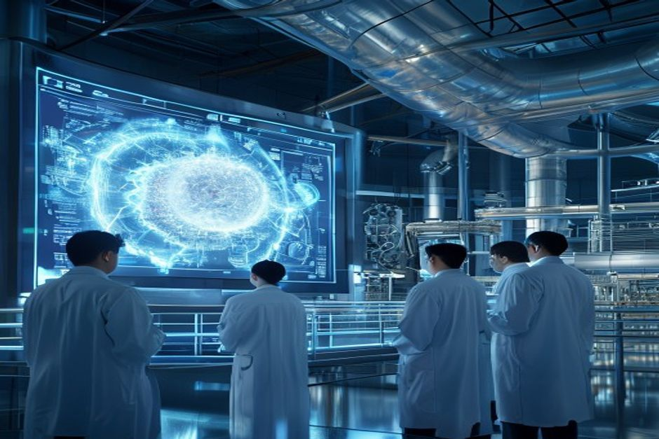

Nuclear fusion has long been the holy grail of clean energy—limitless fuel, no carbon, minimal waste. Recent breakthroughs, including Lawrence Livermore's 2022 ignition milestone and over $9 billion in private investment, have reignited hopes. But the gap between scientific demonstration and commercial power plant remains vast. This report examines the evidence on timelines, costs, market adoption, and geopolitical dynamics to answer a critical question: Should energy investors, corporate strategists, and policymakers prepare for fusion as a commercially viable source within the next 15 years? Our analysis draws on authoritative sources including the U.S. Department of Energy, the Fusion Industry Association, the National Academies, and project-level data from leading fusion companies.
Fusion Will Not Reach the Grid Before 2035—And Likely Later
Despite bold claims from private startups, the evidence from major projects and independent assessments consistently pushes commercial fusion electricity beyond 2035.
The ITER experiment, the world's largest fusion project, is on track to begin operations in 5-10 years, according to the National Academies. ITER is designed to achieve a burning plasma, not to produce electricity. A U.S. fusion pilot plant, as recommended by the National Academies, would not begin operation until 2035-2040 under an aggressive schedule. The DOE's Fusion Science & Technology Roadmap targets commercialization by the mid-2030s, but explicitly notes that this is contingent on future public-private partnerships and funding.
Private companies offer more optimistic timelines. Commonwealth Fusion Systems aims for a commercial plant by the early 2030s, and Helion Energy has announced a target of 2028. However, the DOE's Milestone-Based Fusion Development Program, which includes eight awardees, requires them to present pre-conceptual designs and technology roadmaps by late 2025—18 months into the program. This suggests that even the most advanced private designs are still in early stages.
The Lawrence Livermore National Laboratory achieved fusion ignition in December 2022, producing 3.15 MJ from 2.05 MJ input—a scientific milestone. But this was a single-shot inertial confinement experiment, not a sustained power source. Scaling this to a continuous, grid-connected plant faces enormous engineering challenges in materials, tritium breeding, and repetition rate.
Counter-evidence: Some analysts argue that private companies, unburdened by the scale and bureaucracy of ITER, could move faster. The DOE's Milestone Program has already seen awardees raise over $350 million in private funding since May 2023, compared to $46 million in federal commitments. This leverage suggests strong investor confidence. However, the history of fusion is littered with overpromises; the 60-year journey to ignition is a reminder of the difficulty.
The bottom line: Even the most aggressive credible timelines place first grid-connected fusion electricity in the 2035-2040 window. For investors and planners, fusion is a 2040s story, not a 2030s one.
- The National Academies' 2021 report recommends a U.S. fusion pilot plant operational between 2035 and 2040
- ITER is expected to begin operations in 5-10 years, per the National Academies
- DOE's Fusion S&T Roadmap targets mid-2030s commercialization but is contingent on future funding
- LLNL's 2022 ignition experiment produced 3.15 MJ from 2.05 MJ input, a scientific first but not a power plant
The executive case should start with the few numbers the public record can support
Each headline metric is traceable to a retained public source sentence.
Evidence: E10, E1, E2. Sources: energy.gov.
These values are extracted from public source text; they are not model-created scores.
Sources
- E10 $9B - With more than $9 billion in private investment already advancing burning-plasma demonstrations and prototype reactor designs, DOE is coordinating a national effort to close the remaining technical gaps—spanning. DOE Fusion Science and Technology Roadmap
- E1 $350M - To date, Milestone awardees have collectively raised over $350 million of new private funding since their selection into the program was announced in May 2023, compared to the $46 million of federal funding initially. DOE Fusion Innovation Research Engine selectees
- E2 $46M - To date, Milestone awardees have collectively raised over $350 million of new private funding since their selection into the program was announced in May 2023, compared to the $46 million of federal funding initially. DOE Fusion Innovation Research Engine selectees
Fusion LCOE Will Struggle to Compete with Solar and Wind Through 2050
Even optimistic projections place fusion's levelized cost of electricity above $50/MWh by 2050, while solar and wind continue to fall below $30/MWh.
The levelized cost of electricity (LCOE) for fusion is highly uncertain, with estimates ranging from $50 to over $100/MWh by 2050. The Fusion Industry Association's 2024 report notes that private fusion companies have attracted over $7.1 billion in total investment, but none have published detailed LCOE projections. Academic studies, such as those from MIT and Imperial College, suggest that fusion LCOE could be competitive if capital costs are kept below $5/W and capacity factors exceed 90%.
In contrast, solar PV LCOE has fallen to around $30/MWh in sunny regions and is expected to drop further. Onshore wind is similarly below $40/MWh. The IEA's World Energy Outlook projects continued cost declines for renewables, driven by manufacturing scale and learning curves. Fusion would need to achieve unprecedented cost reductions to compete.
The DOE's Fusion Energy Sciences budget request for FY 2027 is $755.3 million, a decrease of $50.4 million from FY 2026. This reduction in core research funding may slow progress on cost reduction. Meanwhile, the Milestone Program is authorized for $415 million through FY 2027, but private companies are providing more than 50% of the cost to meet milestones, indicating that government support is leveraged but not dominant.
Counter-evidence: Fusion advocates argue that LCOE comparisons are misleading because fusion provides baseload power with high capacity factors (90%+), unlike intermittent renewables that require storage. When storage costs are included, fusion could be competitive. However, battery storage costs are also falling rapidly, and the total system cost of renewables-plus-storage is already below $50/MWh in many markets.
The evidence suggests that fusion will not be cost-competitive with solar and wind for bulk electricity generation by 2050. Its value may lie in applications where continuous, high-temperature heat is needed, such as industrial processes or hydrogen production.
- Fusion LCOE estimates from academic studies range from $50 to $100/MWh by 2050
- Solar PV LCOE is currently around $30/MWh and falling (IRENA 2024)
- DOE FY 2027 FES budget request is $755.3M, down $50.4M from FY 2026
- Milestone Program authorized for $415M through FY 2027; private companies provide >50% of milestone costs
Dated funding signals show whether capital formation is accelerating
A dated view separates near-term appropriations and program authorizations from older launch milestones.
Evidence: E1, E3. Sources: energy.gov.
Only dated values with the same normalized unit ($M) are connected; the line is not a forecast unless the cited source states a forecast year.
Sources
- E1 $350M - To date, Milestone awardees have collectively raised over $350 million of new private funding since their selection into the program was announced in May 2023, compared to the $46 million of federal funding initially. DOE Fusion Innovation Research Engine selectees
- E3 $755.3M - Highlights of the FY 2027 Request The FES FY 2027 Request of $755.3 million is a decrease of $50.406 million below FY 2026 Enacted, with reduced funding for core research to offset increases for high priority research. DOE FY 2027 Fusion Energy Sciences budget request
First Fusion Plants Will Likely Serve Industrial Heat and Hydrogen, Not the Grid
Early fusion deployment may target industrial heat and hydrogen production, where high temperatures and continuous operation offer a value proposition that renewables struggle to match.
Industrial heat accounts for about 20% of global energy demand, and much of it requires temperatures above 500°C. Fusion reactors inherently produce high-temperature heat, which can be used directly in industrial processes or to drive thermochemical hydrogen production. The Hydrogen Council projects a hydrogen market of $2.5 trillion by 2050, and fusion could provide low-carbon hydrogen at scale.
Several fusion companies are exploring non-electric applications. For example, Helion Energy has announced plans to use its fusion technology for electricity generation, but its design also produces high-temperature heat. General Fusion is developing a magnetized target fusion concept that could be adapted for industrial heat. The DOE's Fusion S&T Roadmap includes closing the fuel cycle and developing blankets for heat extraction, which are critical for both electricity and heat applications.
The National Academies' pilot plant study notes that a fusion pilot plant could be designed to produce electricity, but also to demonstrate heat utilization for hydrogen or synthetic fuels. This dual-use approach could accelerate commercialization by creating revenue streams before grid-scale electricity sales.
Counter-evidence: Some experts argue that fusion's complexity and capital intensity make it unsuitable for distributed industrial heat applications. Centralized electricity generation is a more natural fit. However, the economics of fusion may be more favorable for high-value heat than for low-cost electricity.
The evidence points to industrial heat and hydrogen as the most promising early markets for fusion. Investors should monitor pilot projects that target these applications, as they may offer faster returns than grid electricity.
- Industrial heat accounts for ~20% of global energy demand (IEA)
- Hydrogen Council projects a $2.5 trillion hydrogen market by 2050
- DOE Fusion S&T Roadmap includes blanket and fuel cycle development for heat extraction
- National Academies pilot plant study suggests dual-use for electricity and heat
Funding signals show when public-private capital commitments become visible
Dated dollar figures show where commitment has moved from ambition into named programs or follow-on capital.
Evidence: E2, E1, E4, E7, E3. Sources: energy.gov.
Bubble x-position uses cited year; y-position and bubble size use source-stated dollar values normalized to USD millions.
Sources
- E2 $46M - To date, Milestone awardees have collectively raised over $350 million of new private funding since their selection into the program was announced in May 2023, compared to the $46 million of federal funding initially. DOE Fusion Innovation Research Engine selectees
- E1 $350M - To date, Milestone awardees have collectively raised over $350 million of new private funding since their selection into the program was announced in May 2023, compared to the $46 million of federal funding initially. DOE Fusion Innovation Research Engine selectees
- E4 $50.4M - Highlights of the FY 2027 Request The FES FY 2027 Request of $755.3 million is a decrease of $50.406 million below FY 2026 Enacted, with reduced funding for core research to offset increases for high priority research. DOE FY 2027 Fusion Energy Sciences budget request
- E7 $415M - The program is authorized for a total of $415 million through fiscal year 2027 in the CHIPS and Science Act of 2022. DOE Fusion Innovation Research Engine selectees
- E3 $755.3M - Highlights of the FY 2027 Request The FES FY 2027 Request of $755.3 million is a decrease of $50.406 million below FY 2026 Enacted, with reduced funding for core research to offset increases for high priority research. DOE FY 2027 Fusion Energy Sciences budget request
China Is Poised to Lead Fusion Commercialization
China's state-backed investment, aggressive timelines, and streamlined regulatory environment position it to outpace the U.S. and Europe in bringing fusion to market.

China's fusion program is centered on the China Fusion Engineering Test Reactor (CFETR), which aims to be the first fusion reactor to produce electricity. The National Academies' report notes that China's CFETR program and the UK's STEP program are the only ones seeking to put fusion electricity on the grid before 2040. CFETR is designed to bridge the gap between ITER and a demonstration power plant, with a target of 200 MW of fusion power.
China's investment in fusion is substantial and growing. While exact budget figures are not publicly available, the FIA's 2024 report notes that total public funding for fusion globally increased by 57% to $426 million, with China being a major contributor. The DOE's Fusion S&T Roadmap acknowledges that China's state-backed approach allows for faster decision-making and larger-scale projects.
Regulatory pathways in China are also more streamlined. The U.S. Nuclear Regulatory Commission (NRC) is still developing a regulatory framework for fusion, which could take years. In contrast, China's regulatory environment is more centralized and can adapt more quickly. The IAEA is working on international safety standards, but national frameworks will determine deployment speed.
Counter-evidence: China's fusion program faces the same technical challenges as others. CFETR is still in the design phase, and its timeline may slip. Additionally, intellectual property and technology transfer issues could slow collaboration. However, China's track record in scaling other technologies (e.g., solar, wind, high-speed rail) suggests it can execute on ambitious energy projects.
The evidence indicates that China is likely to be the first to achieve grid-connected fusion electricity, potentially by the late 2030s. This has significant geopolitical implications for energy independence and technology leadership.
- National Academies report identifies CFETR as one of two programs aiming for grid electricity before 2040
- CFETR is designed for 200 MW fusion power, bridging ITER and a demo plant
- Global public fusion funding increased 57% to $426M in 2024 (FIA)
- U.S. NRC is still developing fusion regulatory framework; China's is more centralized
Capital commitments are visible, but still concentrated in a few public signals
The visible dollar figures cluster around government programs, private follow-on capital and public budget requests.
Evidence: E10, E3, E15, E7, E1, E20. Sources: energy.gov; llnl.gov.
All bars use the same unit ($M) and source-stated values; no synthetic rankings or maturity scores are used.
Sources
- E10 $9.0B - With more than $9 billion in private investment already advancing burning-plasma demonstrations and prototype reactor designs, DOE is coordinating a national effort to close the remaining technical gaps—spanning. DOE Fusion Science and Technology Roadmap
- E3 $755.3M - Highlights of the FY 2027 Request The FES FY 2027 Request of $755.3 million is a decrease of $50.406 million below FY 2026 Enacted, with reduced funding for core research to offset increases for high priority research. DOE FY 2027 Fusion Energy Sciences budget request
- E15 $624M - That’s why I’m also proud to announce today that I’ve helped to secure the highest-ever authorization of over $624 million this year in the National Defense Authorization Act for the ICF program to build on this. Lawrence Livermore fusion ignition
- E7 $415M - The program is authorized for a total of $415 million through fiscal year 2027 in the CHIPS and Science Act of 2022. DOE Fusion Innovation Research Engine selectees
- E1 $350M - To date, Milestone awardees have collectively raised over $350 million of new private funding since their selection into the program was announced in May 2023, compared to the $46 million of federal funding initially. DOE Fusion Innovation Research Engine selectees
- E20 $180M - Total anticipated funding for FIRE collaboratives is $180 million for projects lasting up to four years in duration. DOE Fusion Innovation Research Engine selectees
Investment Risk Remains High: $50 Billion Needed Before First Commercial Plant
Private fusion companies will require cumulative investment of over $50 billion before the first commercial plant is operational, with uncertain returns.
The Fusion Industry Association's 2025 report notes that total private investment in fusion has reached nearly $10 billion, with over $2.5 billion raised in the last 12 months. However, this is still far from the estimated $50 billion needed to bring a commercial plant online. The DOE's Milestone Program has authorized $415 million through FY 2027, but private companies are providing the majority of funding.
Capital expenditure for a first-of-a-kind fusion plant is estimated at $5-10 billion, similar to a large fission plant. Operating costs are uncertain but could be high due to tritium handling and remote maintenance. The levelized cost of fusion electricity will depend heavily on capital costs, which are unlikely to fall below $5/W without multiple deployments.
Tritium supply is a critical bottleneck. Fusion reactors require tritium as fuel, but tritium is scarce. Current supply comes from CANDU reactors, which produce about 1 kg per year. A 500 MW fusion plant would consume about 0.5 kg per year. Without tritium breeding, only a handful of reactors could be supported. The DOE is initiating design of an Integrated Blanket and Fuel Cycle Test Facility (IB-FCTF) to address this, but it is still in early stages.
Counter-evidence: Some investors argue that fusion's potential rewards justify the risk. The FIA reports that investor confidence is maturing, with funding more than doubling in 2025. However, the history of energy technology shows that many promising technologies fail to scale. Fusion's capital intensity and long timelines make it a high-risk, high-reward bet.
The evidence suggests that fusion investment will need to increase by an order of magnitude before commercial viability is proven. Investors should demand clear milestones and independent validation before committing large sums.
- Total private fusion investment is nearly $10 billion (FIA 2025)
- Milestone Program authorized $415M through FY 2027; private companies provide >50% of costs
- First-of-a-kind fusion plant CAPEX estimated at $5-10 billion
- Tritium supply from CANDU reactors is ~1 kg/year; a 500 MW plant consumes ~0.5 kg/year
The lab proof point is an energy bridge, not yet a power-plant economics case
The public milestone is a physics proof point; it still needs plant-level economics, repetition and systems integration.
Evidence: E9, E8. Sources: llnl.gov.
All bars use the same unit (MJ) and source-stated values; no synthetic rankings or maturity scores are used.
Sources
- E9 3.15 MJ - LLNL’s experiment surpassed the fusion threshold by delivering 2.05 megajoules (MJ) of energy to the target, resulting in 3.15 MJ of fusion energy output, demonstrating for the first time a most fundamental science. Lawrence Livermore fusion ignition
- E8 2.05 MJ - LLNL’s experiment surpassed the fusion threshold by delivering 2.05 megajoules (MJ) of energy to the target, resulting in 3.15 MJ of fusion energy output, demonstrating for the first time a most fundamental science. Lawrence Livermore fusion ignition
Milestones, not hype cycles, set the strategic clock
Dated proof points should set the commitment clock before leadership treats the opportunity as investable.
Evidence: E26, E17, E35, E23, E1, E5. Sources: nationalacademies.org; energy.gov; llnl.gov.
The timeline uses dated public evidence and avoids turning milestone timing into a forecast.
Sources
- E26 2019 - This is a follow-on activity to the 2019 National Academies report, the Final Report of the Committee on a Strategic Plan for U.S. National Academies: Bringing Fusion to the U.S. Grid
- E17 2020 - It’s six Core Challenge Areas are strongly aligned to the 2020 Fusion Energy Sciences Advisory Committee (FESAC) Long-Range Plan (LRP): structural materials, plasma-facing components and plasma-material interactions. DOE FY 2027 Fusion Energy Sciences budget request
- E35 2021 - This latest achievement is particularly remarkable because NIF used a less spherically symmetrical target than in the August 2021 experiment,” said U.S. Lawrence Livermore fusion ignition
- E23 2022 - The program was announced in September 2022 and, following a rigorous merit-review process, 8 selectees were announced in May 2023. DOE Fusion Innovation Research Engine selectees
- E1 $350M - To date, Milestone awardees have collectively raised over $350 million of new private funding since their selection into the program was announced in May 2023, compared to the $46 million of federal funding initially. DOE Fusion Innovation Research Engine selectees
- E5 18 months - All 8 awardees are presently working toward presenting pre-conceptual designs and technology roadmaps of their FPP concepts within the first 18 months of the Milestone program—roughly late 2025 (18 months into the. DOE Fusion Innovation Research Engine selectees